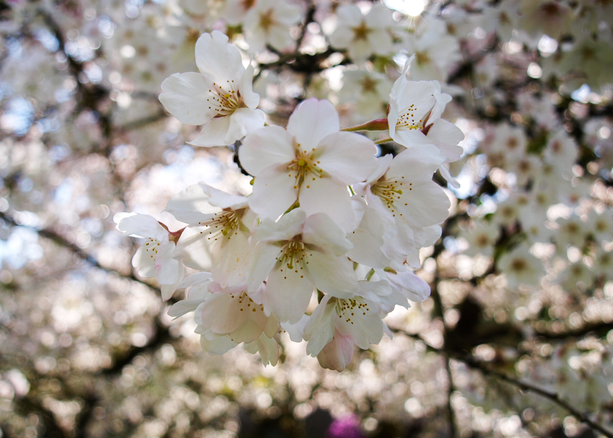
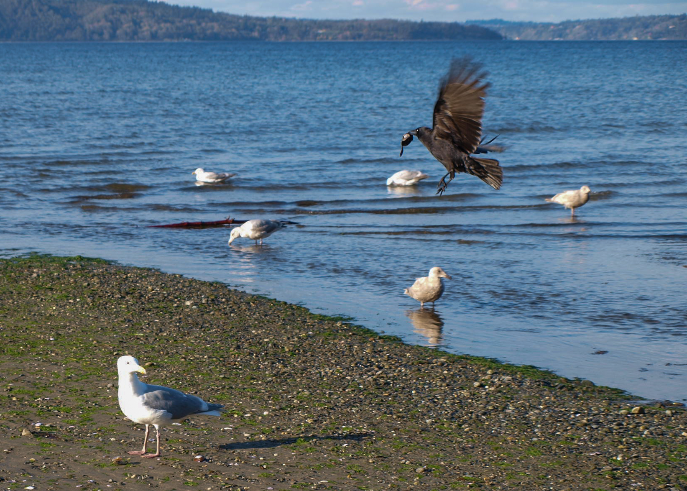
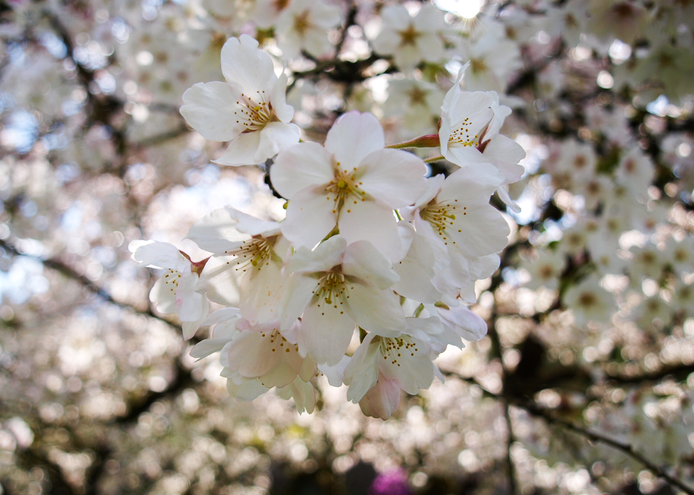
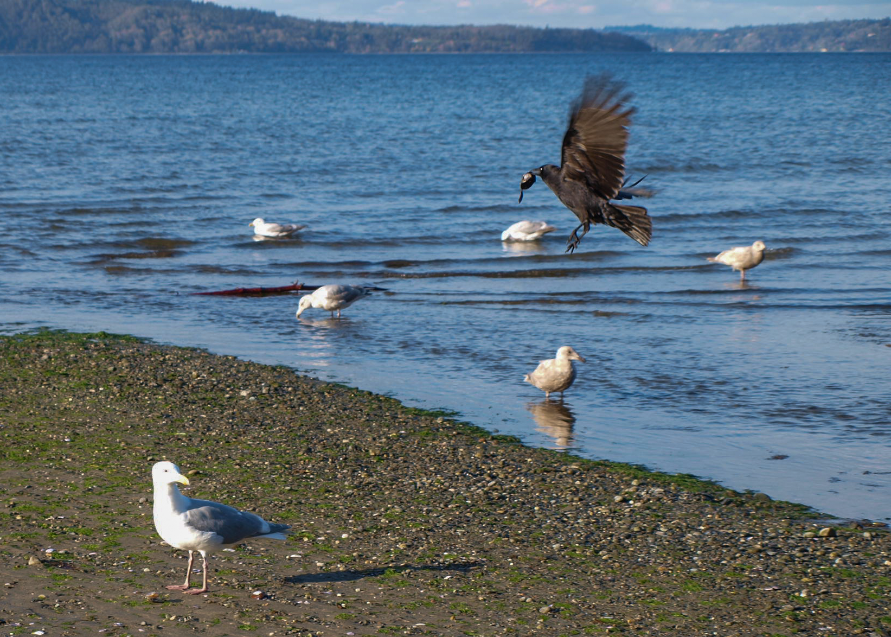
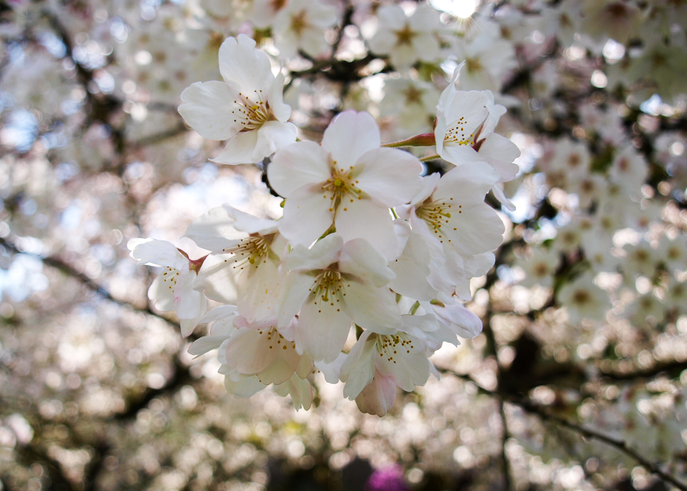
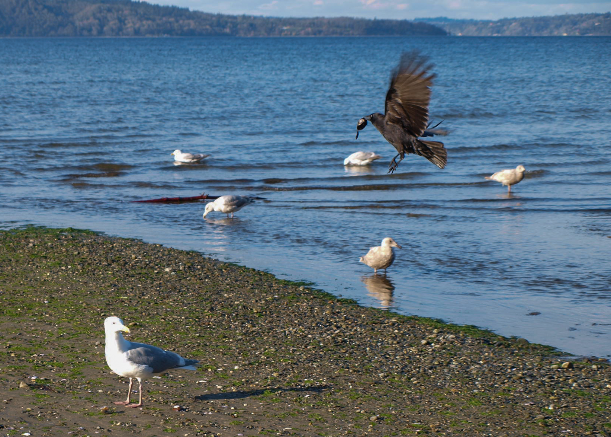
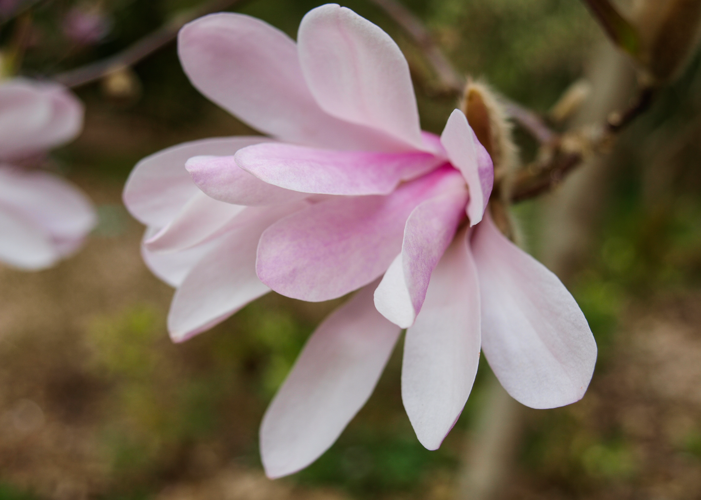
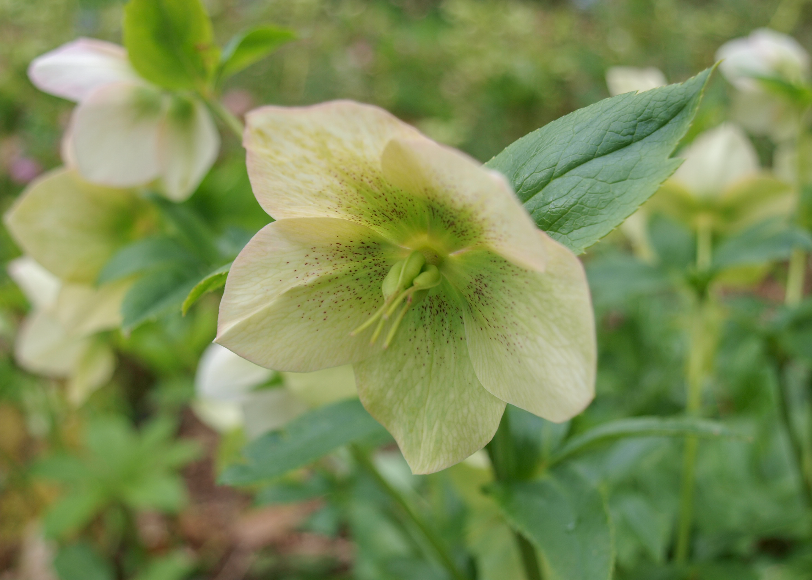
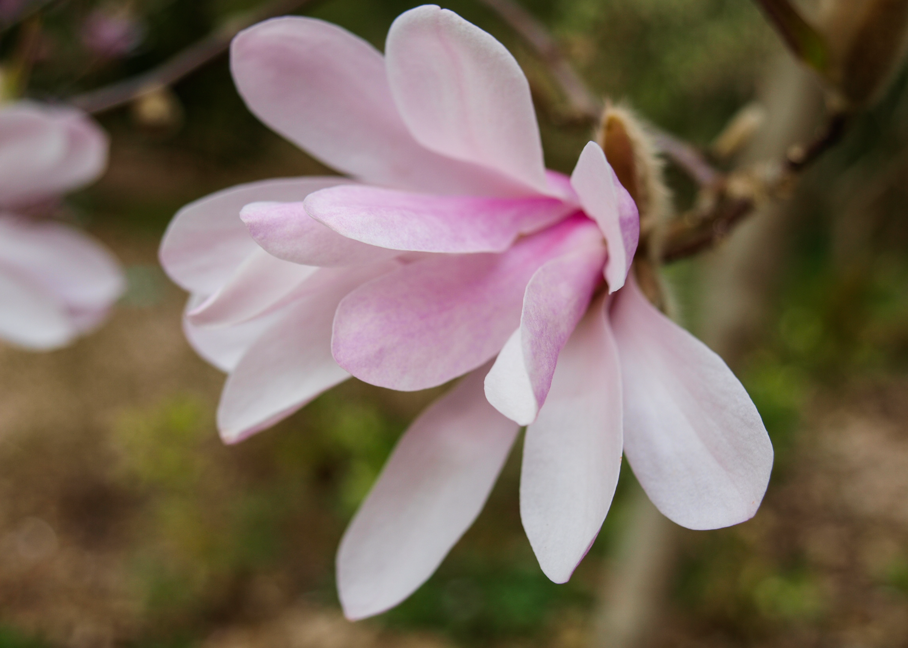
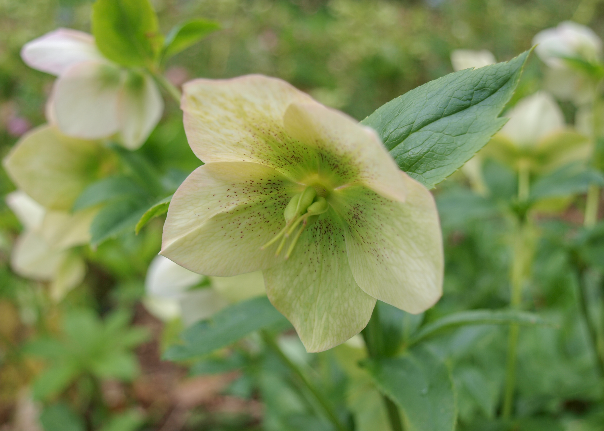

Taking images of the things that matter...
 



I still have no idea what I'm doing...


 



Go over to the Photographs page and check out the plants, scenery, and animal life photographs. Explore the type of photos taken in various places and see which photos you like.
Wanna know where the photo was taken? Hover over the picture and see where the location was.